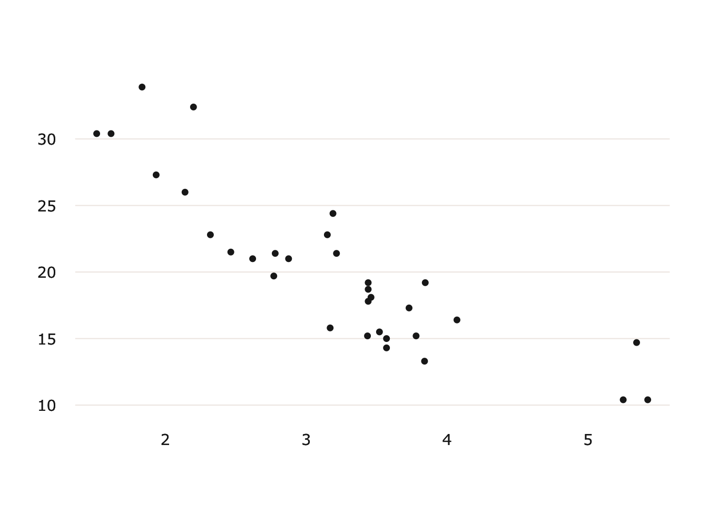

The goal of theme_usq is to provide USQ staff and students with an easy to use ggplot2 theme that conforms to the USQ visual guidelines for typography and colour.
Quickstart
The theme.usq package is only available from GitHub. The easiest way to install it is by using the devtools package.
if(!require(devtools)){
install.packages("devtools")
library(devtools)
}
devtools::install_github("adamhsparks/theme_usq")Example 1: Graphing Discrete Data
Using the theme.usq’s theme_usq for ggplot2, plot car weights by mpg and facet by Transmission (0 = automatic, 1 = manual) using the usq_palette in the scale_colour_manual discrete scale function to use USQ colours for the graph.
library("ggplot2")
library("theme.usq")
# Discrete values
p1 <- ggplot(mtcars) +
geom_point(aes(
x = wt,
y = mpg,
colour = factor(gear)
)) +
scale_colour_manual(values = usq_palette) +
facet_wrap(~ am) +
theme_usq()
p1
Example 2: Graphing Continuous Data
Using the usq.theme’s theme_usq for ggplot2, plot values using the usq_fill_gradient to use USQ colours for continuous values in the graph.
# continuous values
df <- reshape2::melt(outer(1:4, 1:4), varnames = c("X1", "X2"))
p2 <- ggplot(df, aes(X1, X2)) +
geom_tile(aes(fill = value)) +
usq_fill_gradient() +
theme_usq()
p2
Code of Conduct
Please note that this project is released with a Contributor Code of Conduct. By participating in this project you agree to abide by its terms.